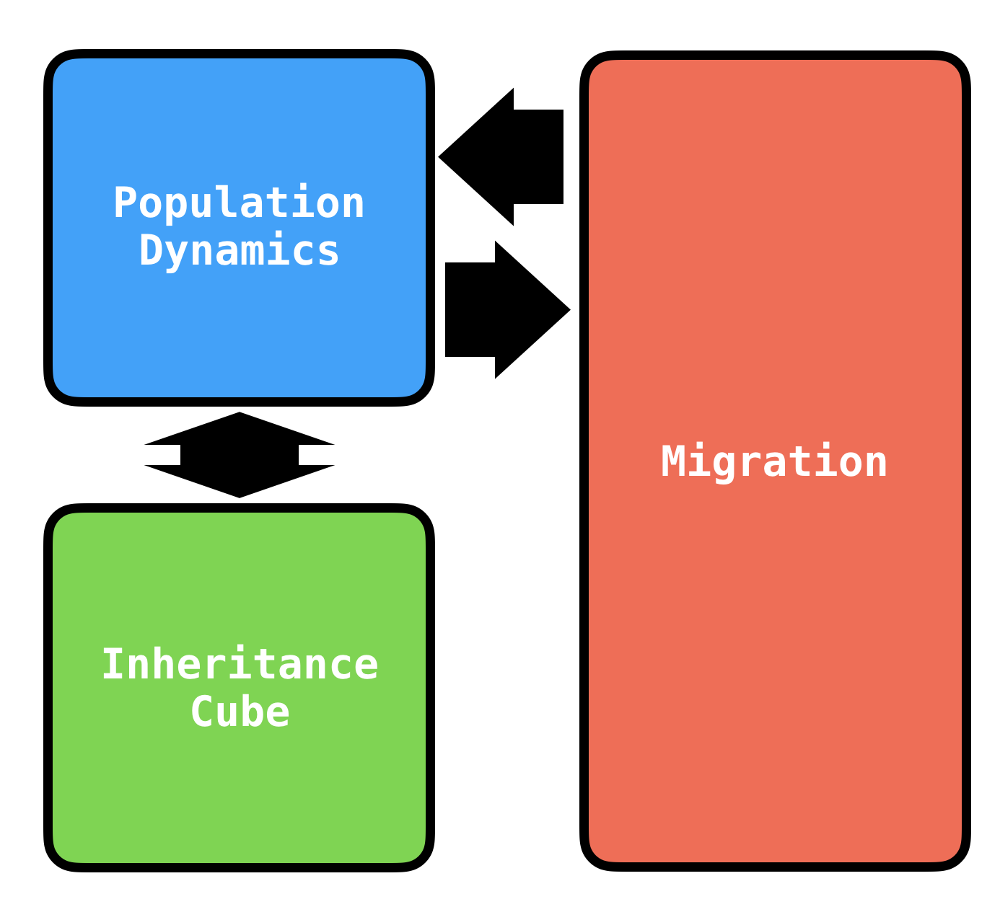

MGDrivE.RdMGDrivE: Mosquito Gene Drive Explorer
Recent developments of CRISPR-Cas9 based homing endonuclease gene drive systems for the suppression or replacement of mosquito populations have generated much interest in their use for control of mosquito-borne diseases (such as dengue, malaria, chikungunya and Zika). This is because genetic control of pathogen transmission may complement or even substitute traditional vector-control interventions, which have had limited success in bringing the spread of these diseases to a halt. Despite excitement for the use of gene drives for mosquito control, current modeling efforts have analyzed only a handful of these new approaches (usually studying just one per framework). Moreover, these models usually consider well-mixed populations with no explicit spatial dynamics. To this end, we are developing MGDrivE (Mosquito Gene DRIVe Explorer), in cooperation with the 'UCI Malaria Elimination Initiative', as a flexible modeling framework to evaluate a variety of drive systems in spatial networks of mosquito populations. This framework provides a reliable testbed to evaluate and optimize the efficacy of gene drive mosquito releases. What separates MGDrivE from other models is the incorporation of mathematical and computational mechanisms to simulate a wide array of inheritance-based technologies within the same, coherent set of equations. We do this by treating the population dynamics, genetic inheritance operations, and migration between habitats as separate processes coupled together through the use of mathematical tensor operations. This way we can conveniently swap inheritance patterns whilst still making use of the same set of population dynamics equations. This is a crucial advantage of our system, as it allows other research groups to test their ideas without developing new models and without the need to spend time adapting other frameworks to suit their needs.
MGDrivE is based on the idea that we can decouple the genotype inheritance process from the population dynamics equations. This allows the system to be treated and developed in three semi-indpendent modules that come together to form the system. The way this is done will be described later in this document but a reference diagram is shown here.

The original version of this model was based on work by (Deredec et al. 2011; Hancock and Godfray 2007) and adapted to accommodate CRISPR homing dynamics in a previous publication by our team (Marshall et al. 2017) . As it was described, we extended this framework to be able to handle a variable number of genotypes, and migration across spatial scenarios. We did this by adapting the equations to work in a tensor-oriented manner, where each genotype can have different processes affecting their particular strain (death rates, mating fitness, sex-ratio bias, et cetera).
Before beginning the full description of the model we will define some of the conventions we followed for the notation of the written description of the system.
Overlines are used to denote the dimension of a tensor
Subscript brackets are used to indicate an element in time. For example: \(L_{[t-1]}\) is the larval population at time: \(t-1\).
Parentheses are used to indicate the parameter(s) of a function. For example: \(\overline{O(T_{e}+T_{l})}\) represents the function \(O\) evaluated with the parameter: \(T_{e}+T_{l}\)
Matrices follow a 'row-first' indexing order (i: row, j: column)
In the case of one dimensional tensors, each slot represents a genotype of the population. For example, the male population is stored in the following way: $$\overline{Am} = \left(\begin{array}{c} g_1 \\ g_2 \\ g_3 \\ \vdots \\ g_n \end{array}\right) _{i}$$ All the processes that affect mosquitoes in a genotype-specific way are defined and stored in this way within the framework.
There are two tensors of squared dimensionality in the model: the adult females matrix, and the genotype-specific viability mask. In the case of the former the rows represent the females' genotype, whilst the columns represent the genotype of the male they mated with: $$\overline{\overline{Af}} = \left(\begin{array}{ccccc} g_{11} & g_{12} & g_{13} & \cdots & g_{1n}\\ g_{21} & g_{22} & g_{23} & \cdots & g_{2n}\\ g_{31} & g_{32} & g_{33} & \cdots & g_{3n}\\ \vdots & \vdots & \vdots & \ddots & \vdots\\ g_{n1} & g_{n2} & g_{n3} & \cdots & g_{nn} \end{array}\right) _{ij}$$ The genotype-specific viability mask, on the other hand, stores the mothers' genotype in the rows, and the potential eggs' genotype in the columns of the matrix.
Deredec A, Godfray HCJ, Burt A (2011). “Requirements for effective malaria control with homing endonuclease genes.” Proceedings of the National Academy of Sciences of the United States of America, 108(43), E874--80. ISSN 1091-6490, doi: 10.1073/pnas.1110717108 , http://www.ncbi.nlm.nih.gov/pubmed/21976487{%}5Cnhttp://www.pubmedcentral.nih.gov/articlerender.fcgi?artid=PMC3203790. Hancock PA, Godfray HCJ (2007). “Application of the lumped age-class technique to studying the dynamics of malaria-mosquito-human interactions.” Malaria journal, 6, 98. ISSN 1475-2875, doi: 10.1186/1475-2875-6-98 , http://www.pubmedcentral.nih.gov/articlerender.fcgi?artid=1971713{\&}tool=pmcentrez{\&}rendertype=abstract. Marshall J, Buchman A, C. HMS, Akbari OS (2017). “Overcoming evolved resistance to population-suppressing homing-based gene drives.” Nature Scientific Reports, 1--46. ISSN 2045-2322, doi: https://doi.org/10.1101/088427 .